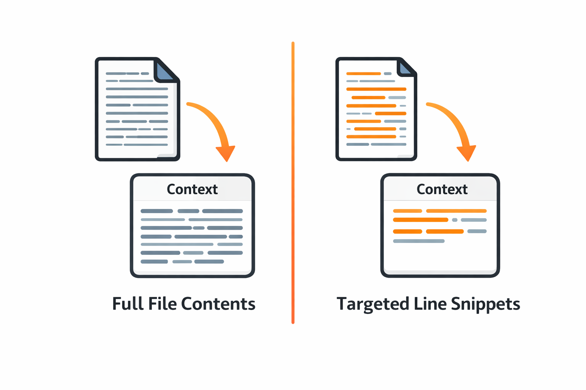
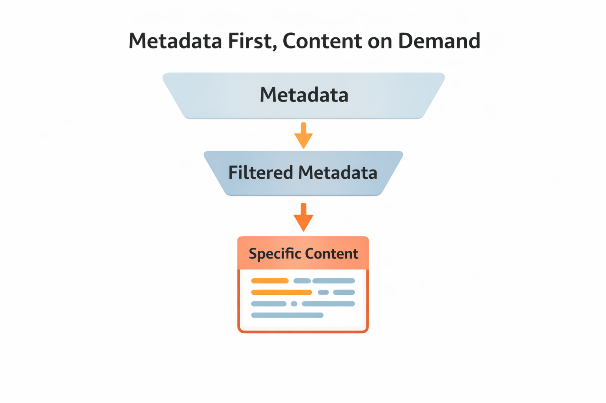

class: center, middle, inverse count: false # Token-Efficient Tool Design --- # The Problem: Verbose Tool Results In Lecture 4.1, we saw that tool results account for **50-70% of tokens** in a typical agent session. In Lecture 4.2, we learned strategies for managing context **once it's full.** This lecture: keeping context small **in the first place.** - Sliding window, selective preservation, compaction — **reactive** - Token-efficient tool design — **proactive** .callout[Don't just clean up context after it grows. Stop the growth at the source.] ??? One minute max. Single pivot: we've been cleaning up context — now we prevent the mess. --- # Every Tool Result Enters Context When an agent calls a tool, the result enters the conversation history. It stays there for **every subsequent API call.** - Tool results are **append-only** — once in context, they stay until you explicitly manage them - A single verbose tool result can consume more tokens than the entire system prompt - The agent may call the same tool multiple times — each result accumulates - Tool design is the **most impactful lever** for controlling context growth .callout[Design tools that return the minimum the model needs.] ??? Students already know tool results dominate (from 4.1). Now connect that to tool *design* as something they control. --- # Tool Use Example: read_file A naive `read_file` tool returns the entire file: ```python # read_file(path) → returns the entire file contents def read_file(path): return open(path).read() # Returns 500 lines → ~2,000 tokens in context ``` The agent calls `read_file("parser.py")` and gets all 500 lines — even though it might only need 10. Three files, two reads each → **12,000 tokens** of context on raw file contents alone. ??? The naive read_file is the villain. Keep this concrete — students should feel the waste. --- # Better Design: Search, Then Read .split-left[ Split one tool into two — let the agent ask for what it needs: .small-code[ ```python # search_file(path, query) → matching lines def search_file(path, query): matches = [] for i, line in enumerate(open(path), 1): if query in line: matches.append(f"Line {i}: {line.strip()}") return "\n".join(matches) # 5 matches → ~50 tokens # read_lines(path, start, end) → specific range def read_lines(path, start, end): lines = open(path).readlines() return "".join(lines[start-1:end]) # 20 lines → ~80 tokens ``` ] **Instead of 2,000 tokens → ~130 tokens.** ] .split-right[ <p></p> ] <div class="clear"></div> ??? The contrast between 2,000 and 130 tokens is the payoff. Let the numbers speak. --- # Metadata, Then Content .split-left[ **Step 1:** Return metadata — what exists, where, how big **Step 2:** Agent requests specific content on demand - **File search:** line numbers → read specific lines - **Database:** row count, columns → fetch specific rows - **API search:** titles, IDs → fetch specific records - **Directory:** file names, sizes → read specific files .info[This is progressive disclosure — reveal information in layers. We'll build this into our tools later in the course.] ] .split-right[ <p></p> ] <div class="clear"></div> ??? Name the pattern. Students should walk away with "progressive disclosure" as a concept they can apply to any tool they design. --- # Pagination and Summarization .split-left[ ### Pagination Return a fixed page, not all results: ```python # search_codebase(query, page=1, per_page=10) # Returns 10 results, not all 200 ``` - Agent sees the first page, decides if it needs more - Most of the time, the answer is in the first few results ] .split-right[ ### Summarized Results Return the verdict, not the raw evidence: ```python # run_tests() → # "8 passed, 2 failed: # test_auth_login, test_auth_refresh" # Instead of 200 lines of output ``` - Agent can request full output for specific failures ] <div class="clear"></div> ??? Quick coverage — variations on the same theme. Don't spend more than a minute on each. --- # Key Takeaways **1. Tool results are the biggest context lever** — 50-70% of tokens, and you control the design **2. Progressive disclosure** — metadata first, specific content on demand **3. Pagination and summarization** — return the minimum the model needs to make its next decision ### Next: we move from context to the agent loop itself — building the core loop that ties tools, context, and the LLM together. ??? Brief transition to the next module.